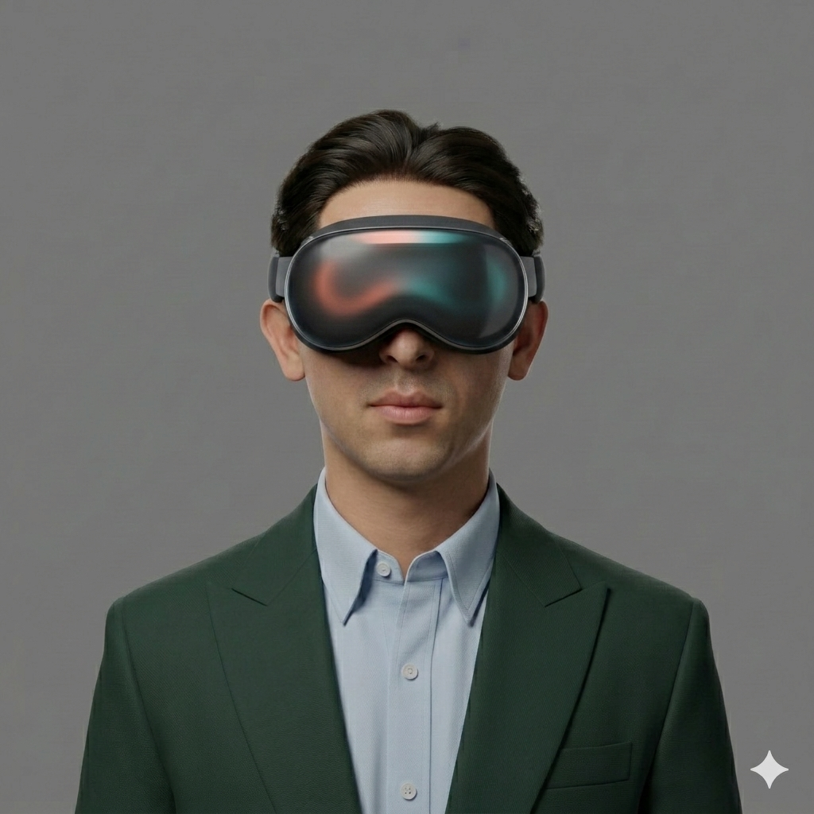

Solo, full-stack
One person, the whole pipeline — UX, 3D, engineering, and the AI layer. Design decisions and code are the same hand.

I build immersive experiences you can step inside — end to end, from the first sketch to the last line of code.
At Edwards Lifesciences I'm building a VR platform that trains clinicians for real procedures — and I'm building all of it: the experience, the 3D world, the code, and an AI layer that adapts to each trainee. Just me, end to end.
It's the work I've been chasing for years — immersive technology where the stakes are real. Still in progress; here's how it fits together.
One person, the whole pipeline — UX, 3D, engineering, and the AI layer. Design decisions and code are the same hand.
An AI system that responds to the trainee in real time, shaping scenarios and guidance to how each clinician performs.
Spatial-first interaction designed for VR — not a flat app bolted into 3D, but an experience that only works in the headset.
Training for high-consequence medical procedures, where getting the interaction and fidelity right actually matters.
The whole story, in order — how a premed kid obsessed with baseball ended up building VR for surgeons.
For a long time I only had two speeds.
Small build, fast — recruited on speed, strong in the classroom, quietly obsessed with building things from the ground up. The plan wrote itself: premed, a prestigious school, med school. I never questioned it.
Then cancer walked into my family, and medicine stopped being abstract.
A diagnosis at home sent me into the lab for real — 300+ hours in Dr. Stephen Kron's lab probing TET2 inhibition as a leukemia target, work that won a research-poster award at UIUC. It taught me to start every project with a patient, not a pixel.
One year took the two things I was sure of — my speed, and my family's health.
A torn hamstring ended the athlete's path, and a second, harder diagnosis tested my family. Watching someone I love move through chemo, I started sketching what became SuzChews — a small, human answer to a brutal process. I realized there was more to life than the script I'd been following.
So I stopped following the script and left.
Enrolled online and backpacked fourteen countries alone before ever setting foot at USC. Meeting people who'd built completely different lives showed me the path I was on wasn't actually mine.
Two internships taught me what school didn't.
In the R&D lab I learned how science survives contact with a business — flavor systems, stability testing, sensory panels. In media, producing brand films for Crayola, Harley-Davidson, and Jamba, I learned that the best technology still needs a story.
Back on the premed track I was miserable — memorizing the Krebs cycle when all I wanted to do was build.
Then I found the Iovine & Young Academy and its brand-new Human Technology Interaction degree — I'm on track to be the first person at USC to earn it. Design and engineering stopped being separate skills, and I went all-in on spatial computing: Meta Quest, Vision Pro, NVIDIA Omniverse — including turning that SuzChews sketch into a real product design.
It all led here.
Science, design, and storytelling finally converge: a VR training platform for clinicians I'm building end to end, on my own.
See what I'm building now ↑The plan: go deep at a place building the future for a few years — then build my own.
"I build things that live at the edge of what's technically possible and deeply human."
I study Human Technology Interaction at USC's Iovine & Young Academy — a program where design and engineering aren't separate skills.
Right now I'm at Edwards Lifesciences, building a VR training platform on my own — the design, the code, all of it.
Before XR, I spent years in cancer-immunology labs. That's where I learned to start every project with a real person and a real problem.
The plan from here is simple: spend the next few years building hard things alongside people I can learn from — then start my own company.
Education
Human Technology Interaction · USC Iovine & Young Academy · studied abroad at Franklin University Switzerland
Currently
Building VR training for clinicians, solo, at Edwards Lifesciences
Toolkit
Unity · Blender · Omniverse · visionOS · Meta Quest · Figma · C# / C++ / Python / Swift
Research
Cancer immunology wetlab @ UChicago · award-winning UIUC symposium presenter
Interests & passions
Get in touch
I'm looking for a place to go deep — a team building ambitious things in XR or spatial computing, where I can spend the next few years learning from the best. (Then, one day, build my own.)